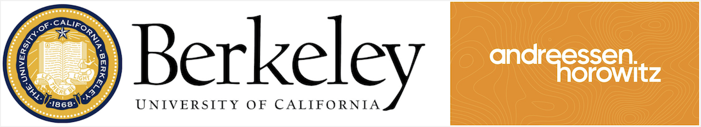

🦍 GoEx: A Runtime for Autonomous LLM Applications
Shishir G. Patil Tianjun Zhang Vivian Fang Noppapon C. Roy Huang Aaron Hao Martin Casado Joseph E. Gonzalez Raluca Ada Popa Ion Stoica

Large Language Models (LLMs) are evolving beyond their role of providing information within dialogue systems to actively engaging with tools and performing actions on real-world applications and services. Today, humans verify the correctness and appropriateness of the LLM-generated outputs (e.g., code, functions, or actions) before putting them into real-world execution. This poses significant challenges as code comprehension is well known to be notoriously difficult. We study how humans can efficiently collaborate with, delegate to, and supervise autonomous LLMs in the future. We argue that in many cases, "post-facto validation"—verifying the correctness of a proposed action after seeing the output—is much easier than the aforementioned "pre-facto validation" setting. The core concept behind enabling a post-facto validation system is the integration of an intuitive undo feature, and establishing a damage confinement for the LLM-generated actions as effective strategies to mitigate the associated risks. Using this, a human can now either revert the effect of an LLM-generated output or be confident that the potential risk is bounded. We believe this is critical to unlock the potential for LLM agents to interact with applications and services with limited (post-facto) human involvement. We describe the design and implementation of our open-source runtime for executing LLM actions, Gorilla Execution Engine (GoEx), and present open research questions towards realizing the goal of LLMs and applications interacting with each other with minimal human supervision. GoEx is completely open source, under the Apache 2.0 license.
Quick Links:
- GoEx Slack Demo 🤖
Let's first take a look at a demo of GoEx in action. In this example, Vivian uses GoEx to send a message, "Hello Tianjun, it's nice to meet you! Let's get you set up..." to Tianjun in Slack. The user can choose to either commit or undo the action if the generated and executed code is incorrect.
GoEx provides a simple and intuitive interface for executing LLM generated code, with the option to commit or undo the action.
- Moving from Chatbots to Autonomous Agents 🚀
In the example above, the LLM is autonomously using microservices, services, and applications, with little human supervision. Different autonomous LLM-powered applications can be built on top of the GoEx engine, such as a Slack bot that can send messages, a Spotify bot that can create playlists, or a Dropbox bot that can create folders and files. However, in designing such systems, several critical challenges must be addressed:
- Hallucination, stochasticity, and unpredictability. LLM-based applications place an unpredictable and hallucination-prone LLM at the helm of a system traditionally reliant on trust. Currently, services and APIs assume a human-in-the-loop, or clear specifications to govern how and which tools are used in an application. For example, the user clicks the “Send” button after confirming the recipient and body of the email. In contrast, an LLM-powered assistant may send an email that goes against the user's intentions, and may even perform actions unintended by the user.
- Unreliability. Given their unpredictability and impossibility to comprehensively test, it is difficult for a user to trust an LLM off the shelf. However, the growing utility of LLM-based systems means that we need mechanisms to express the safety-utility tradeoff to developers and users.
- Delayed feedback and downstream visibility. Lastly, from a system-design principle, unlike chatbots and agents of today, LLM-powered systems of the future will not have immediate human feedback. This means that the intermediate state of the system is not immediately visible to the user and often only downstream effects are visible. An LLM-powered assistant may interact with many other tools (e.g., querying a database, browsing the web, or filtering push notifications) before composing and sending an email. Such interactions before the email is sent are invisible to the user.

We are moving towards a world where LLM-powered applications are evolving from chatbots to autonomous LLM-agents interacting with external applications and services with minimal and punctuated human supervision. GoEx offers a new way to interface with LLMs, providing abstractions for authorization, execution, and error handling.
- GoEx Runtime Design 🛠️
In the realm of LLM-powered-systems, we introduce “post-facto LLM validation,” which contrasts with traditional “pre-facto” methods. In “post-facto validation,” humans evaluate the outcomes of actions executed by the LLM, rather than overseeing the intermediate processes. This approach assumes that validating results over processes, acknowledging that while verifying outcomes is crucial, understanding and correcting processes based on those outcomes is equally important. Forgoing “pre-facto validation” means execution of actions without prior validation, which introduces risks and potentially leads to undesirable outcomes. We propose two abstractions to mitigate the risk associated with post-facto validation: undoing an action, and damage confinement.
- Reversibility/Undoing an Action
When possible, actions executed by an LLM should give users the right to undo an action. This could require maintaining multiple versions of the system state, leading to high costs in terms of memory and computational resources. Furthermore, the feasibility of implementing undoing an action is often dependent on the level of access granted to the system. For instance, in file systems or databases, where root access is available, undoing actions is possible. However, in scenarios where such privileged access is not granted, such as in email clients like Gmail, the ability to undo an action may be limited or require alternative approaches. One potential solution is for the runtime to make a local copy of the email before deleting, which introduces additional state to the runtime but enables undo for email deletion. Read our paper for more details on how we implement undoing actions in the GoEx runtime.
- Damage Confinement
Not all applications or tools provide the ability to undo an action. For example, emails currently cannot be unsent after some time has elapsed. In scenarios like these, we fall back to "damage confinement" or "blast-radius confinement," as it is necessary to provide users with mechanisms to quantify and assess the associated risks of the actions their LLM-powered application may take. Damage confinement can be viewed as a quantification of the user's risk appetite.
One approach to address this challenge is through the implementation of coarse-grained access control mechanisms. A user could permit their LLM to only read emails instead of sending emails, thus confining the blast radius to an tolerable level.
Design of the GoEx runtime, which provides abstractions for authorization, execution, and error handling.
You can try out the GoEx web app, hosted here. Currently, the web app supports only RESTful calls. The web app displays generated LLM code, allowing users not only to see, but to edit the model output. Then, users can decide whether to run the forward or reverse call and view the output. To save your queries for later, you can log in with Google, automatically saving all content under your account.

Try GoEx without any installation using the GoEx web app.
Currently, the web app does not support all security functionality that the GoEx CLI provides. Notably, the CLI does not expose API keys to the LLM model, instead passing in a file path to retrieve sensitive information. This is not possible on a web browser, and so the queries generated using the front end involve passing raw credentials to the LLM model. In the web app, all sensitive credentials are stored in browser local storage, then retrieved when necessary to execute. We do not store any sensitive information on our servers. Currently, authentication can come in the form of OAuth credentials as well as raw API keys. The number of OAuth services we provide are limited to the ones we add support for, but any number of raw API keys can be added in the browser for different services.
We provide all our code at the repo
here at github.
Let us know what you think!
The Gorilla CLI is an easy to use demo of the gorilla engine, right in your terminal. It has functionality for RESTful, database, filesystem calls. Here are the three types of APIs it supports:
- RESTful: Gmail, Slack, Dropbox, Github, Spotify (awaiting approval)
- Database
- Filesystem
The CLI can be easily installed through pip. For more information on installation and execution check out the repo.
-
Enviroment Setup and Installation:
We highly recommend using a new environment for GoEx. We will use conda for this example.
conda create --name goex python=3.10 -y
conda activate goex
We then install goex using the following command in the exec-engine folder. You will need to clone from the Gorilla repository.
pip install -e .
We use Mkcert to support OAuth2 token exchange. This is necessary for all OAuth services.
brew install mkcert
mkcert -install
mkcert localhost
Windows users can use choco to install mkcert. -
Slack Authorization:
To authorize for slack use the following command:
This will open a window in your browser that prompts you to sign in. The link should also be printed in the terminal like this:
goex -authorize slack
You will be asked to give GoEx permission to a workspace of your choice. Something like this should show up:
-
Execute with GoEx!
To execute prompts with goex, specify the server in your prompt, and add the type of execution. (rest, db, fs). Feel free to play around with the prompt. Make sure to have docker desktop running in the background.
goex execute -prompt send a funny joke to the user with email gorilla@yahoo.com on slack -type rest
Hopefully, after running you should see your new message:

Your output should look something like this:

To unsend the message, select the undo option with the keyboard arrows and hit enter.
If you're having trouble sending a message with email, try using the slack channel ID or slack handle.
In the evolution of LLMs from chatbots to empowering services and applications, slowly moving away from passively providing information to actively and autonomously making decisions has become an increasing trend. We introduce the concept of post-facto validation as a execution paradigm for these new system. We present GoEx as a means to this vision, a critical step toward an LLM tool usage capabilities.
Be sure to check out our Discord community for updates and any questions as well as our official repo on Github.
@inproceedings{gorilla-exec-engine,
title={GoEx: Perspectives and Designs Towards a Runtime for Autonomous LLM Applications},
author={Shishir G. Patil and Tianjun Zhang and Vivian Fang and Noppapon C. and Roy Huang and Aaron Hao and Martin Casado and Joseph E. Gonzalez and Raluca Ada Popa and Ion Stoica},
year={2024},
journal={arXiv preprint arXiv:2404.06921}
}